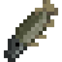
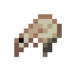

A page for all my mods
My mods that I make in the future, and am proud of, will all be available here! I might make this page dedicated, but for now it's an extension of my blog. I think making friends over modding would be fun :3
I mainly mod for 1.5.2 because of my love of Hexxit, which is why I am learning Forge (not Fabric).
"pre-1.12 versions are usually forge's domain; there are some very popular modding scenes for older versions of minecraft" (I should find out what those scenes are lol)
Each mod should probably have their own Github... or just float around on my computer? idk logistics is hard
- All my mods are small and self-contained (perfect for modpacks!).
- All my mods require a Forge launcher.
Cyberchest - Infinite Searchable Chest
1.5.2, 1.6.4, 1.7.10
|
 |
| Curseforge Page |
Cyberchest - Infinite Searchable Chest
Don't like sifting through lots of chests? Simplify storage with the cyberchest! This midgame block is crafted with eight iron surrounding one diamond. It functions like a chest, but with an infinite scrollable inventory and search bar.
Son of a Fish!
Simply expands the variety of fish that can be caught from fishing. Inspired by this tweet.
Most fish (exceptions include crab, shrimp, etc) cook into the same item (cooked fish fillet), but bigger fish cook into more of them.

